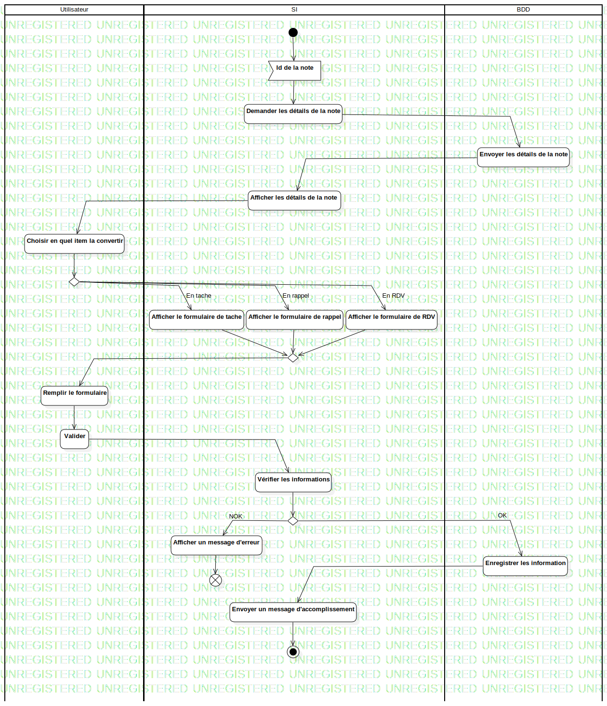

ActD Convertir une note
UMLActivity
Untitled
::
Note
::
ActD Convertir une note
Description
none
Diagrams

ActD Convertir une note
Groups
Utilisateur
SI
BDD
Edges
(InitialNode1→Id de la note)
(Id de la note→Demander les détails de la note)
(Demander les détails de la note→Envoyer les détails de la note)
(Envoyer les détails de la note→Afficher les détails de la note)
(Afficher les détails de la note→Choisir en quel item la convertir)
(Choisir en quel item la convertir→DecisionNode1)
(Afficher le formulaire de tache→MergeNode1)
(Afficher le formulaire de rappel→MergeNode1)
(Afficher le formulaire de RDV→MergeNode1)
(MergeNode1→Remplir le formulaire)
(Remplir le formulaire→Valider)
(Valider→Vérifier les informations)
(Vérifier les informations→DecisionNode1)
NOK (DecisionNode1→Afficher un message d'erreur)
OK (DecisionNode1→Enregistrer les information)
(Enregistrer les information→Envoyer un message d'accomplissement)
(Envoyer un message d'accomplissement→ActivityFinalNode1)
En tache (DecisionNode1→Afficher le formulaire de tache)
En rappel (DecisionNode1→Afficher le formulaire de rappel)
En RDV (DecisionNode1→Afficher le formulaire de RDV)
(Afficher un message d'erreur→FlowFinalNode1)
Properties
Name
Value
name
ActD Convertir une note
stereotype
null
visibility
public
isReentrant
true
isReadOnly
false
isSingleExecution
false
Owned Elements
ActD Convertir une note